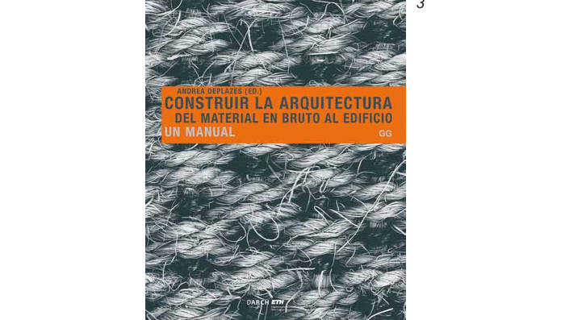

O que mudavas no RGEU
4 caminhos teóricos - projectos de lei para a lei do projecto
Discussão de atelier
reescrito a partir da oralidade real10
I
pessoa A: Malta, parece que temos de discutir o que deve ser o novo RGEU, divertido não?
pessoa B: Ui, nem sei por onde começar!
pessoa C: POR MIM NEM HAVIA RGEU.
B: Como assim, não haver RGEU?
C: então, não serve para nada, hoje está tudo na legislação própria de cada especialidade!
A: Os revestimentos, acabamentos e coisas do género não, continuam a ser “arquitectura”! As dimensões mínimas dos espaços e dos fogos também!
C: pois pois, e a reação ao fogo dos revestimentos, não defines em SCIE?
A: Certo, mas a SCIE não abrange todos os materiais, uma torneira ou um puxador, por exemplo.
B: Já nos estamos a desviar um bocado do cerne da questão, isso é muito construtivo e nunca vai aparecer numa lei...
 Confissões de um infractor ligeiro11
Confissões de um infractor ligeiro11
Sobre a questão “O que eliminaria do RGEU?”: não é difícil de ver que
em boa parte é já um “tratado” em descrédito, pouco usado e, ainda
pior, desconsiderado pelas entidades. Alguns exemplos soltos de que
me lembro do nosso projecto da Casa de Férias, em Esposende:
Artigo 69º - o acesso aos quartos não é feito propriamente por um
corredor. É, na verdade, por uma sala mais privada, usada como tal.
Podemos chamá-lo corredor sobredimensionado mas, na realidade,
funciona com espaço de estadia de pessoas.
O quarto principal tem um espaço fundo que junta closet e área de
dormir, sem qualquer divisão.
O comprimento de ambos os espaços têm mais do dobro da largura,
apesar de janelas nos dois lados opostos mais distantes, no caso da
sala privada. No entanto, lá não cabe um círculo de diâmetro de 2,7 m.
Apesar de não cumprirem à letra este artigo, o projecto foi aprovado e
não parece haver problemas de salubridade. (ver imagem 5)
Artigo 65º - nesta área comum do piso térreo coloca-se o velho tema
do pé direito para o qual há legislação muito dispersa. Tem 2,4 m em
70% da área térrea e 2,2 m no restante. (ver imagem 7)
Artigo 17º - este artigo tem muito a ver com a reflexão da conver
sa acima transcrita. Posso confirmar que não fomos obter nenhum
parecer prévio junto do LNEC dos materiais usados. Diria que
madeira termo-tratada e outros encaixam na definição de novos mate
riais, sujeitos a parecer técnico. (ver imagem 6)
Artigo 67º - todos conhecemos aquele amigo com um T1 que, por
esta ou aquela razão, tem de estar registado como T0 ou estúdio.
Este artigo e outros sobre as condições associadas a um fogo fecham
por completo uma diversificação das tipologias habitacionais, no
meadamente num habitar comum para cozinhar, trabalhar, conviver,
associado à célula individual, em vez do triste T1 ou o actual muito
precário aluguer de quartos (que tantos profissionais acabam por
ocupar quando se mudam de cidade). Essa discussão, do advento de
uma certa cultura de erimitismo urbano por necessidade e de como
resolvê-lo espacialmente, obrigaria a rever o conceito de fogo e de
propriedade horizontal. Contendo riscos, é algo que precisa de ser
repensado se queremos agitar o marasmo actual da oferta tipológica.
II
A: Se for um código da construção, pode não falar só de salubridade por via dos afastamentos, áreas e larguras mínimas - que em boa parte já estão contemplados noutras leis - mas também de como se construir com qualidade hoje. Não vos parece haver uma espécie de vazio de critério em relação a isso?
B: Para mim deveria ser só uma espécie de lei geral da construção, falando das boas práticas, bastante genérico e não vinculativo.
A: UMA CONSTITUIÇÃO da construção, mas, já agora, tirando as considerações estéticas do actual RGEU, é isso?
B: Exacto, algo assim.
C: Mas se, à imagem da constituição, não for para aplicar, não serve de nada, será uma bela prosa. Continuo a achar que é possível “engavetar” tudo o que o RGEU actual tem na legislação própria de cada especialidade, muito complexificada desde 1951. Reparem que mesmo a largura de um corredor é hoje definida pelas acessibilidades. Na prática, a área de uma casa de banho e mesmo outros espaços estão totalmente condicionados pelo 163/2006. E o resto, da construção, é uma resposta específica que cada projectista, em cada projecto, tem de dar com as condições actuais de documentação dos materiais, etc.
A: Sim, em abstrato não me importava de ter um RGEU minimalista, a conter apenas aquelas coisas que, por lógica, não possam ser incluídas na legislação específica (que também precisa de uma grande arrumação e limpeza).

III
A: Era importante exigir uma sistematização, para maior compreensão do que se está realmente a propor e a aplicar em cada material, de cada marca - a garantia não é suficiente e ficarmos reféns da marca não é caminho. A marca tem o monopólio do conhecimento construtivo do material mas depois, na articulação com outros materiais na obra, como é? Não é suficiente a publicação nos sites próprios de cada uma, com parâmetros e possibilidades de aplicação díspares. Aplicamos um Mapalestic SMART ou um SIKA TOP - 107 SEAL ES e facilmente escapa que são ambas argamassas de impermeabilização bicomponente, que devem ser aplicadas nisto ou naquilo e fiscalizadas desta ou daquela forma. Já para não falar da miríade de subcategorias de produto ininteligíveis, se são só soluções mais baratas, vulgo piores, ou outra coisa qualquer.
B: Estás a limitar muito os sistemas não certificados. Imagina um senhor que faça um excelente perpianho de base com tijolo maciço daí para cima, ligados por algum engenho próprio. Excluis da construção?
A: Não, pelo contrário, inclur-se-iam esses materiais mais elementares e muito testados, podendo isso dar até aso a um maior uso após a “inscrição oficial”. A proposta visa ordenar esta selva fragmentária, que só encontro paralelo na vitrine dos iogurtes do supermercado: perco sempre imenso tempo a comparar e a escolher o que realmente quero! Seria um instrumento que obrigaria as marcas a enquadrarem-se e compararem-se com as demais, sem mitos comerciais ou publicitários. Há várias pistas muito operativas noutros países, porque já temos uma percentagem enorme de materiais com marca numa obra, faltam critérios de aplicação e responsabilização comuns. Todos estes temas estão muito ligados às lacunas enormes na formação que uma lei não pode resolver, claro. Mas é importante haver algo como uma entidade reguladora da construção, que agisse com base numa legislação robusta e coerente. O novo RGEU, se quiser ser útil, devia tomar uma direcção “MAIS CONSTRUTIVA” e suprir o vazio que temos na sistematização das soluções construtivas*. Pensem, era um descanso, eram logo cancelados os fenólicos e imitações para as fachadas, que começam a ganhar barriga e ficam com os parafusos zincados todos soltos. Claramente as fichas técnicas não chegam e os exemplos de outros países, França e Suiça à cabeça, são prova disso.
B: Hmmm, ok, esta conversa deu-me fome.
* organizado por um instituto
nacional, no caso português
o LNEC seria o mais indica
do aparentemente. Poderia
também ser adequado como
entidade reguladora, não co
nhecemos em detalhe essa
possibilidade.
 IV
IV
A: Pode parecer absurdo, especulativo e significar um caminho menos óbvio para uma nova lei, mas há partes do actual RGEU que me recordam uma certa TRATADÍSTICA CLÁSSICA, pela forma quase absoluta como alguns artigos são escritos. Muitíssimo tardia em Portugal para organizar o advento de uma expansão da construção do séc. XX, sente-se que esta lei moderna e, em certa medida, modernista, procura preencher em definitivo um certo vazio doutrinal pós revivalismos fin de siècle. Logo, vai além das questões de salubridade, visa iluminar um caminho para os projectistas, tanto do ponto de vista construtivo, como do ponto de vista estílistico, reiterando as opções de materiais, tipos de cobertura, etc. É o tipo de empreitada que não é estranha aos Tratados de Alberti, Palladio, Serlio, entre outros. Aliás, sempre que vejo a nossa obra Casa César, parece-me saída da visão do RGEU, mas prometo que as coberturas inclinadas, os beirais à portuguesa, os alpendres, o perpianho, as chaminés e o reboco foram tudo pedidos do cliente que procuramos compor. Ao contrário, há obras, aparentemente mais racionais, como a Casa de Férias, que parecem distantes do vocabulário do RGEU, seja na configuração espacial ou na materialidade.
 (1) - Yona Friedman, Structures Serving the Unpredictable, NAi Publishers, 1999.
(1) - Yona Friedman, Structures Serving the Unpredictable, NAi Publishers, 1999.
(2) - Constituição da República Portuguesa, 1976.
(3)- Andrea Deplazes, Construir la Arquitectura, Gustavo Gili, 2010.
(4)- Andrea Palladio, Four Books Of Architecture, MIT Press, 1997 (capa original) e
Leon Battista Alberti, On the Art of Building in Ten Books, MIT Press, 1988 (capa
original).
(5), (6), (7)- Casa de Férias, ATELIERDACOSTA, fotografia de Tiago Casanova.
(8)- Casa César, ATELIERDACOSTA, fotografia de ATELIERDACOSTA.
(9)- Vitrine de iogurtes em supermercado brasileiro e Prateleira de arquivo de catálo
gos de materiais no ATELIERDACOSTA.
(10) - textos de Hugo Barros a partir da referida discussão de atelier.
(11)- texto de Hugo Barros.
↑